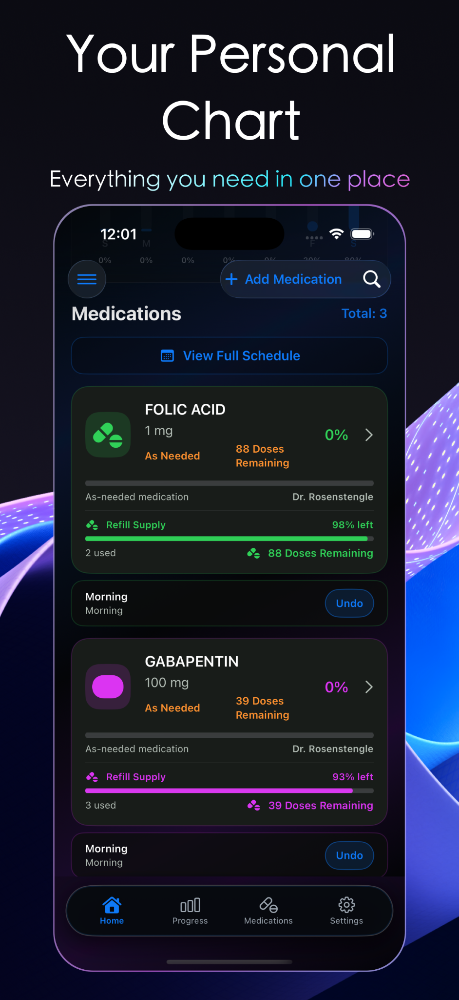
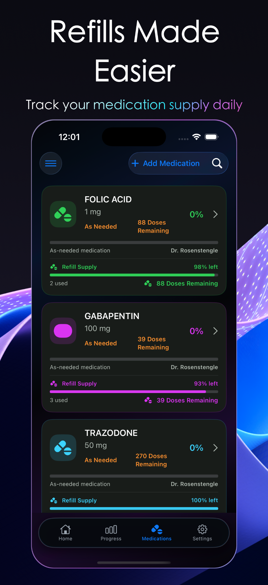
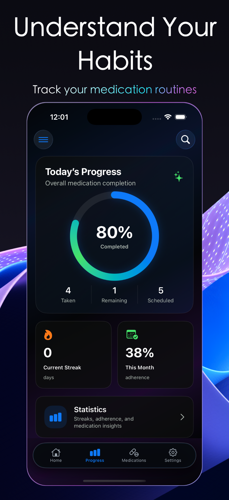
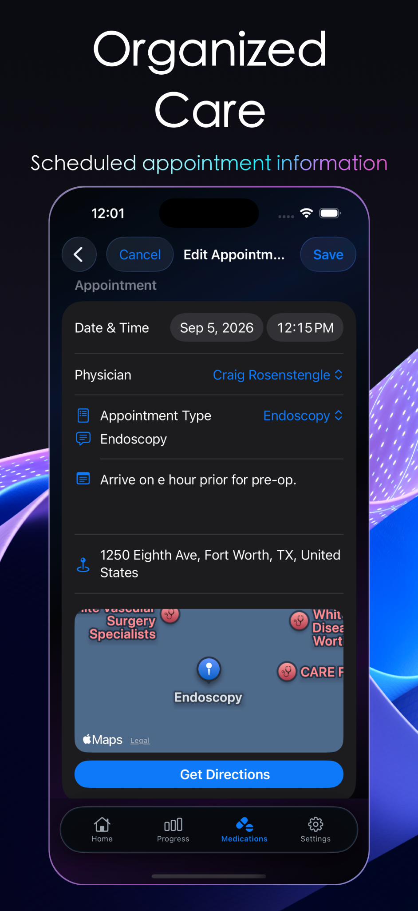
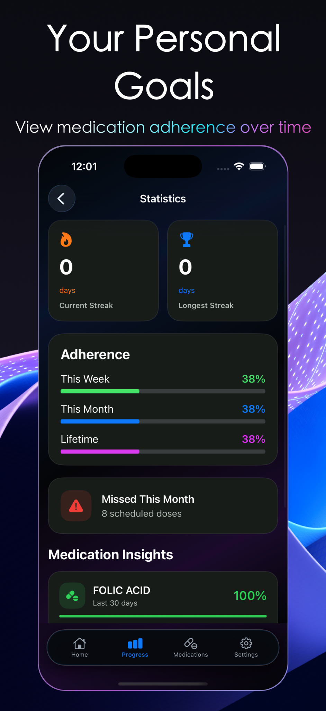
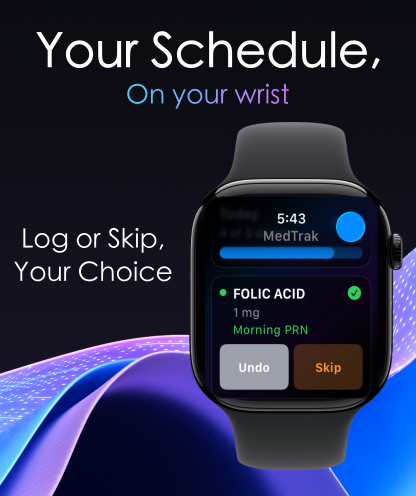
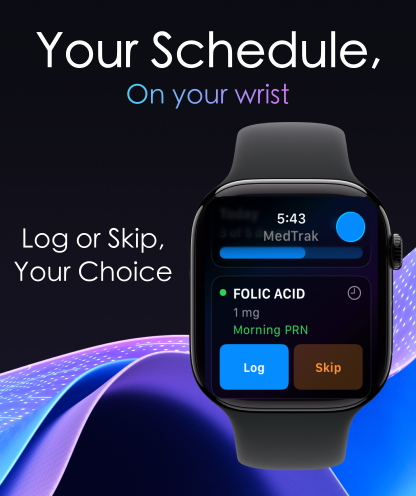

Available now on the App Store for iPhone with Apple Watch companion
Your Personal Dashboard

Your Personal Chart

Refills Made Easier

Understand Your Habits

Organized Care

Your Personal Goals
MEDTRAK ON APPLE WATCH
Your schedule. Right on your wrist.
View scheduled medications and quickly Log, Skip or Undo a dose from Apple Watch. Dose activity stays synchronized with MedTrak on iPhone so your progress remains current.
Log a doseSkip when neededUndo with one tapiPhone synchronization


MEDTRAK AT A GLANCE
Built to keep the important details close.
MedTrak brings medication schedules, dose history, refill supply, appointments, providers,
prescription scanning, statistics and medication reports together in one focused experience.
01
Stay on schedule
Daily timeline, reminders and quick Taken/Undo actions keep the day understandable.
02
Know your supply
Quantity, usage and doses remaining help make low-supply situations visible before they become urgent.
03
Keep care connected
Appointments, physicians, pharmacies and prescribed medications can stay linked together.
04
Share a clear report
Generate a clean medication summary for appointments, printing or sharing when needed.
05
Scan supported prescriptions
Use the camera to scan supported flat prescription labels, then review recognized information before saving.
06
See your progress
Review adherence, streaks, dose history and medication insights over time.